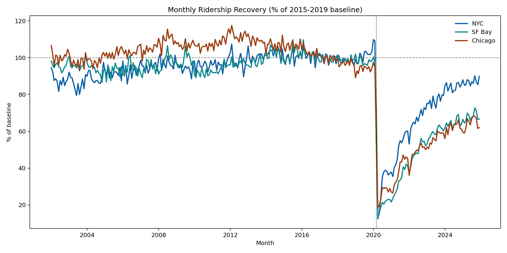
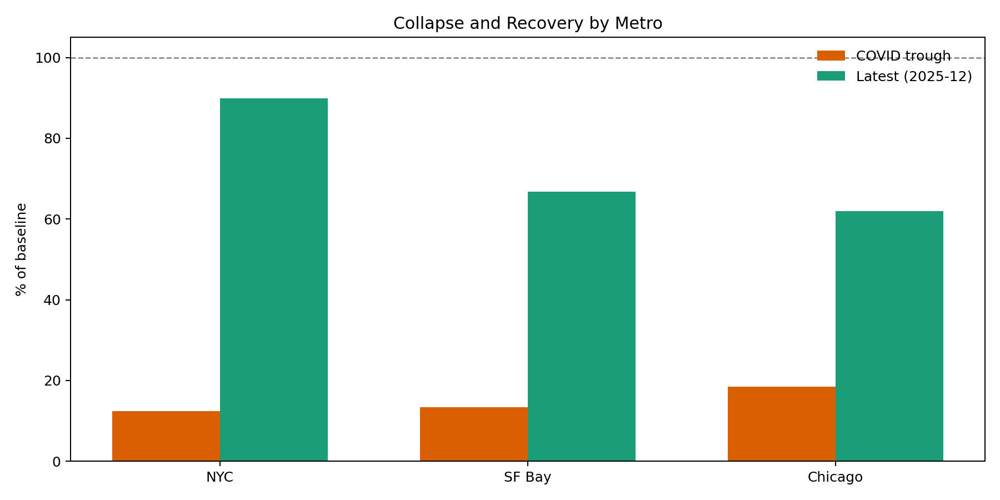
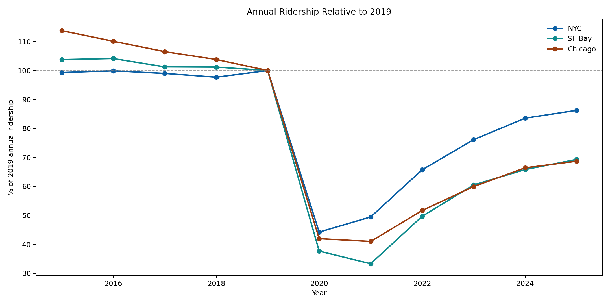
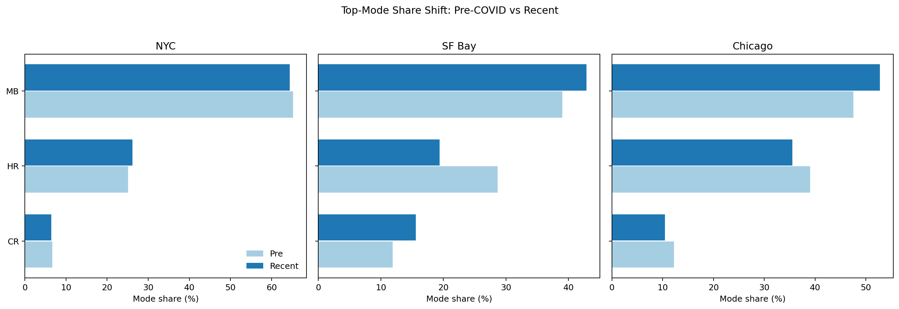
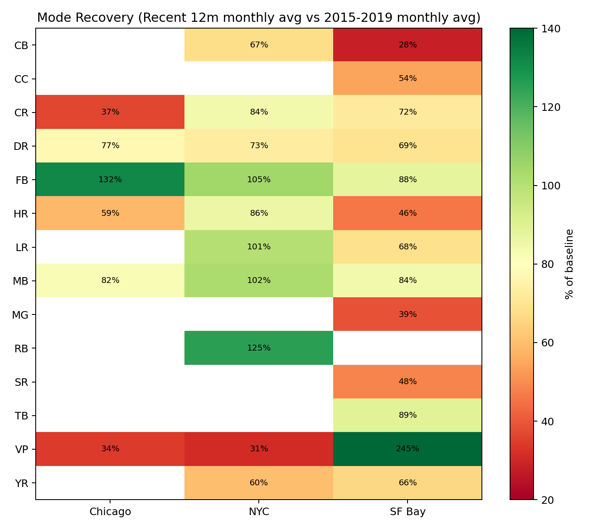
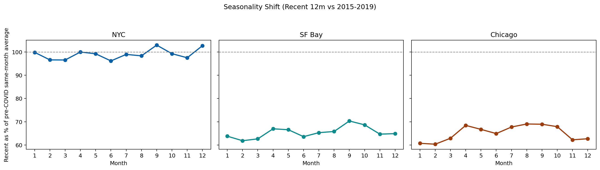

Transit Ridership Recovery After COVID
NYC vs SF Bay vs Chicago
FTA NTD complete monthly ridership (`8bui-9xvu`) | Through 2025-12 | Baseline: 2015-2019
TL;DR
- NYC recovered furthest: 89.9% of baseline (Dec 2025).
- SF Bay and Chicago lag: 66.7% and 62.0%.
- All three hit trough in April 2020.
- 2025 annual ridership remains below 2019 in every metro.
Insight 1: Recovery Paths Diverged

Shared initial shock, very different long-run trajectories.
Insight 2: Collapse vs Recovery

NYC rebuilt demand much further from trough than SF Bay and Chicago.
Insight 3: Annual Levels Still Below 2019

2025 annual vs 2019: NYC 86.3%, SF Bay 69.3%, Chicago 68.7%.
Insight 4: Mode Mix Shift

Bus/ferry share rose; rail normalization remains incomplete in SF Bay/Chicago.
Insight 5: Mode-Level Recovery Is Uneven

Recovery is segmented by mode, not uniform.
Insight 6: Seasonality Still Weaker

Most months remain below pre-COVID same-month levels outside NYC.
Strategic Implications
- Use metro+mode-specific demand assumptions.
- Prioritize high-recovery frequent services.
- Redesign weak commuter-peak offerings.
- Track recovery monthly by corridor and mode.